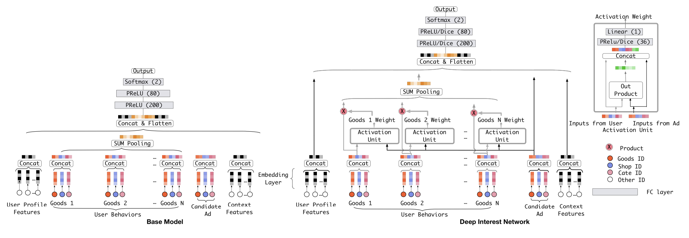
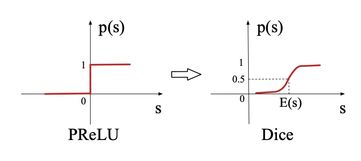

在前面的排序模型中, 更多是关于特征的不同的交叉方式, 而在这篇中, 将会介绍一种将Attention思想引入进来的经典排序模型, DIN.
前言
DIN的全称为Deep Interest Network, 即深度兴趣网络, 之所以叫这个名字, 应该是阿里的开发者一开始就是将这个模型用在CTR领域, 用以更好地估计用户的兴趣. 原始的论文在这里.
在前面的一些排序模型中, 如GBDT+LR, FM, DNN等, 大多都是将关注点, 放在特征不同的交叉方式上, 而DIN这里与它们不同, 将重心放在了对用户历史行为的进一步挖掘上.
在排序模型中, 用户的历史行为(如点击序列), 是一个非常重要的特征, 能够反映用户近期的一些兴趣偏好或者变化. 通常的做法, 是将物品进行Embedding, 然后再将序列中的物品对应的Embedding做(平均)池化, 来作为一个特征.
然鹅有些时候这样不太好, 将多个不同物品的Embedding进行池化后, 可能整体难以突出地反映用户对某些物品的偏好. 比如用户过去买了一个鼠标, 还买了一些其它生活用品, 现在要估计用户是否会买键盘. 直接平均池化后, 买了一个鼠标这个事件也许就被掩盖了, 其实从用户买过鼠标这件事, 就应该给出一个较大的概率来预测用户会买键盘.
现在有用户的行为序列特征, 以及待曝光物品, 如何能够让模型学会抓住”重点”, 对行为进行深度挖掘呢? Attention! 是的, DIN正是将Attention的方法引入了排序模型. 关于Attention的介绍, 可以看一下我的这篇文章.
下面对DIN的结构进行阐述.
原理

模型的结构如上图, 其中左边的Base Model, 就是常规的DNN.
其中的一些特征, 包括用户的画像信息(User Profile Features); 中间的用户历史行为特征, 其中每个物品的Embedding由物品本身ID, 商铺ID, 分类ID组成, 然后进行池化作为User Behavior Feature; 再往右则是对应的待曝光物品(Candidate Ad)的Embedding; 最后是一些上下文特征(Context Features).
在右边的DIN中, 相比Base Model, 只多了一个Actication Unit, 其具体结构在右上角. 对于Actication Unit来说, 其输入是用户行为序列中的某个物品, 以及待曝光物品的Embedding, 然后将两者原始Embedding和外积得到的向量一起拼接, 再经过一个隐藏层, 输出一个数值.
Actication Unit是干嘛用的呢, 前面说到DIN是加入了Attention, 那么就体现在了这里. 通过将待曝光物品分别和行为序列中每个物品输入Actication Unit, 得到一组数值, 再将这一组数值转换为权重系数, 将行为序列中每个物品的Embedding加权相加, 来替换原始的直接平均池化.
是的, DIN模型的结构其实也比较简单, 并不复杂. 其中的Actication Unit, 在论文中使用了外积的方式, 其实其它一些方式, 如元素差, 哈达玛积等, 也未尝不可.
除了DIN模型本身的结果, 在DIN的论文中, 还有一些值得注意的点:
自适应正则(Adaptive Regularization).
在大规模的ID特征上(想想阿里的用户和物品量), 可以说是稀疏中的稀疏. 在这种情况下, 使用平时的一些优化算法, 会导致一个问题, 比如某个特征对应的参数, 由于这个特征长期为0, 但是又因为正则损失一直存在, 就会让这些参数不停地向零靠拢, 可能导致学习效果不好.
但是为了防止过拟合, 正则是必须要加的, 怎么办呢, 就想了一个办法, 即对于某个特征对应的参数来说, 如果这个特征在这次的batch中出现(为1)了, 那么就正常更新参数, 如果没有, 那么就不更新参数. 具体算法可查看原论文.
这就是自适应正则的主要思想, 除了可以在极度稀疏的数据上提升模型表现, 还可以减少一些计算(没出现的特征对应的参数不更新).
GAUC.
大家应该都知道在二分类排序任务中, AUC是一个经典好用的评估指标, 能够反映整体的模型效果. 然鹅在CTR的场景下, 是否一定很好呢, 不一定.
在CTR场景中, 一般来说是”以人为本”的, 就是相比整体的排序表现, 更希望关注到个人上的排序表现. 而GAUC就考虑到了这一点, G是group的缩写, 意思是按用户来对样本进行分组, 对每组样本计算一个AUC, 然后再按每组的样本数量, 进行加权平均, 得到GAUC.
GAUC相比AUC, 在CTR中更加贴近业务, 更加能够反映真实的排序性能.
Data Adaptive Activation Function (Dice)
对于常见的PRelu激活函数来说, 其转折点是固定的(0点). 而Dice做了改进, 即将通过当前batch对应数据的均值与方差, 来对激活函数的转折点进行调整, 并将整体变得平滑. 将激活函数的转折点对应到均值处, 并用方差来进行伸缩.

对于PRelu来说, $p(s)$是阶跃且固定的, 而对于Dice来说, $p(s)$是变化且连续的. 通过对激活函数的改进, 在DIN中也取得了更好一些的效果.
代码
这里使用的数据, 仍然是经典的movielens的MovieLens 1M Dataset.
其中包含约100万的用户对电影的打分记录, 由约6000用户对约4000电影打分而得到.
包含3份数据, 一份是打分文件”rating.dat”, 格式为用户ID::电影ID::打分::时间戳, 并且:
- 用户ID在1到6040之间.
- 电影ID在1到3952之间.
- 打分有5个等级.
- 每个用户至少有20条打分记录.
一份是用户文件”user.dat”, 格式为用户ID::性别::年龄::职业::邮编.
还有一份电影文件”movies.dat”, 格式为电影ID::电影名称::风格流派.
为了模拟点击预估的情形, 统计了每个用户的平均打分, 将高于平均打分的看做正样本(点击, 1), 低于平均分的看做负样本(曝光未点击, 0).
对入模特征来说, 会分为用户侧特征和物品侧特征. 在这里, 用户侧的特征可以包括用户ID, 用户的基本信息(性别, 年龄, 职业), 用户的历史行为(近期10部点击的电影). 物品侧的特征包括电影ID, 电影的风格流派.
按时间, 即将时间靠后的样本划分为测试集. 同样的, 也要在预处理时对活跃用户进行下采样OvO
数据预处理
1 | # 加载环境 |
1 | # 用户-电影-打分 |
| user_id | item_id | score | time | |
|---|---|---|---|---|
| 0 | 1 | 1193 | 5 | 978300760 |
| 1 | 1 | 661 | 3 | 978302109 |
| 2 | 1 | 914 | 3 | 978301968 |
| 3 | 1 | 3408 | 4 | 978300275 |
| 4 | 1 | 2355 | 5 | 978824291 |
1 | # 用户 |
| user_id | gender | age | job | |
|---|---|---|---|---|
| 0 | 1 | F | 1 | 10 |
| 1 | 2 | M | 56 | 16 |
| 2 | 3 | M | 25 | 15 |
| 3 | 4 | M | 45 | 7 |
| 4 | 5 | M | 25 | 20 |
1 | # 电影 |
| item_id | category_list | |
|---|---|---|
| 0 | 1 | [Animation, Children’s, Comedy] |
| 1 | 2 | [Adventure, Children’s, Fantasy] |
| 2 | 3 | [Comedy, Romance] |
| 3 | 4 | [Comedy, Drama] |
| 4 | 5 | [Comedy] |
1 | # 拼接数据 |
| user_id | item_id | score | time | gender | age | job | category_list | |
|---|---|---|---|---|---|---|---|---|
| 0 | 1 | 1193 | 5 | 978300760 | F | 1 | 10 | [Drama] |
| 1 | 1 | 661 | 3 | 978302109 | F | 1 | 10 | [Animation, Children’s, Musical] |
| 2 | 1 | 914 | 3 | 978301968 | F | 1 | 10 | [Musical, Romance] |
| 3 | 1 | 3408 | 4 | 978300275 | F | 1 | 10 | [Drama] |
| 4 | 1 | 2355 | 5 | 978824291 | F | 1 | 10 | [Animation, Children’s, Comedy] |
1 | # 统计每个用户平均分 |
| avg_score | |
|---|---|
| user_id | |
| 1 | 4.188679 |
| 10 | 4.114713 |
| 100 | 3.026316 |
| 1000 | 4.130952 |
| 1001 | 3.652520 |
1 | # 将每个用户平均分以上的电影, 设置为曝光后点击 |
| user_id | item_id | time | gender | age | job | category_list | label | |
|---|---|---|---|---|---|---|---|---|
| 0 | 1 | 1193 | 978300760 | F | 1 | 10 | [Drama] | 1 |
| 1 | 1 | 661 | 978302109 | F | 1 | 10 | [Animation, Children’s, Musical] | 0 |
| 2 | 1 | 914 | 978301968 | F | 1 | 10 | [Musical, Romance] | 0 |
| 3 | 1 | 3408 | 978300275 | F | 1 | 10 | [Drama] | 0 |
| 4 | 1 | 2355 | 978824291 | F | 1 | 10 | [Animation, Children’s, Comedy] | 1 |
1 | # 用户每次点击/未点击之前的点击记录 |
1 | (1000209, 9) |
1 | # 下采样活跃用户 |
1 | (976564, 9) |
1 | # 按时间分为训练集和测试集 |
1 | # 去除训练集记录过少的用户和电影 |
1 | 循环第1次 |
1 | # 数据编码 |
1 | # 电影类别编码 |
1 | 922815 [5, 14, 0, 0, 0, 0] |
1 | # 电影编码 |
1 | df.info() |
1 | Int64Index: 738583 entries, 922815 to 120526 |
模型训练
1 | # 特征类型 |
1 | feature_info_dict = {'user_id': sparse_feature(3756), |
1 | df_train = df.loc[df['is_test'] == 0] |
1 | ((602717, 10), (70000, 10), (65866, 10)) |
1 | # 转换为字典格式 |
1 | # DIN |
1 | # 训练模型 |
1 | train: 0.8346, val: 0.7941, test: 0.7693 |
小结
对比到目前各排序模型的表现:
| 模型 | 验证集 | 测试集 |
|---|---|---|
| LR | 0.7616 | 0.7348 |
| GBDT+LR | 0.7628 | 0.7352 |
| FM | 0.7834 | 0.7540 |
| Embedding+MLP | 0.7937 | 0.7690 |
| DeepFM | 0.7961 | 0.7705 |
| DIN | 0.7941 | 0.7693 |
从结果来看, 与Embedding+MLP的表现几乎一致, 在验证集和测试集上都只要几个万分点的差距, 这说明在这份数据集上, DIN可能并没有发挥其特点.
DIN通过运用Attention的方式, 深度挖掘用户的行为序列特征, 可以更好地感知到用户的一些偏好, 尽管在这里与Embedding+MLP效果相当, 但仍是一个值得一试的模型.